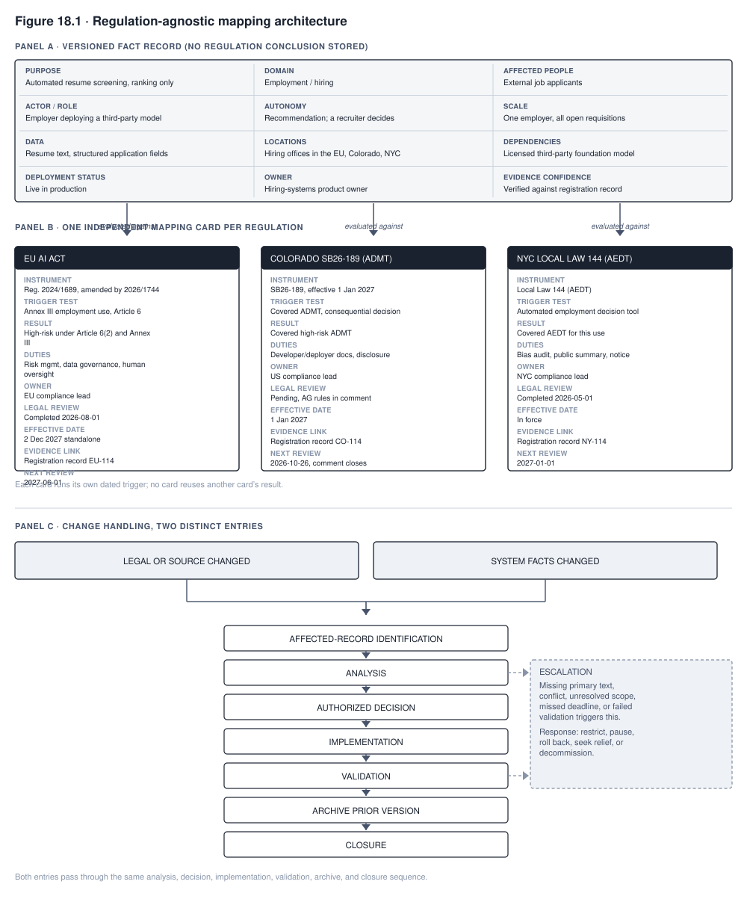

18. Governing Under Uncertainty
The European Union delayed the high-risk obligations of its AI Act in July 2026. The AI Act is the EU’s law on artificial intelligence. Its high-risk obligations are the duties it places on the AI systems it classes as high risk. The law itself sets out which systems those are. Chapter 2 traced this delay and the two planning risks it exposes. Those risks threaten any organization that treats a regulatory date as fixed.
Colorado, a US state, ran a sharper version of the same pattern. It repealed, meaning cancelled, the entire framework that had set its original compliance date. It then enacted a replacement law. Section 18.1 develops what the Colorado case adds.
These facts form a pattern, and it will repeat. A governance program built to a fixed regulatory calendar will keep meeting this same failure, on some regulation, indefinitely, because the pattern is structural. It is not tied to any one law.
The aim is a program that survives the pattern instead of getting lucky on a single date. What carries forward is the discipline, not a snapshot of law.
What you will be able to do
- Explain why a governance program built around fixed compliance dates fails. Use a real regulatory delay to show the mechanism rather than to give an abstract warning.
- Run horizon scanning, which means watching for coming legal change, as a routine discipline. It has four parts. They are choosing sources, setting a schedule, sorting items by urgency (called triage), and turning each change into a tracked internal change request.
- Design a classification and mapping structure that survives regulation change. It builds directly on the inventory and classification work of Chapter 3.
- Name the obligations that stay stable beneath any specific regulatory framework. Describe what the AI governance field asks of the people who practice it.
18.1 Why compliance calendars fail
A compliance calendar treats a regulatory date as the plan itself. A sound plan treats the date as one input that may move. The EU delay shows two ways the calendar approach fails.
The first failure is over-investment. The organization treats the date as immovable. It spends budget and attention finishing certification work, which is the formal proof that a system meets the rules. That work is measured against harmonizing standards, the technical standards a product is checked against. In the delay’s own telling, those standards were the reason the date moved. While such a standard is unfinished, there is nothing settled to check a system against. Work finished early against an unready standard often has to be redone when the standard changes.
The second failure is under-investment. The organization treats the date as already moved before the law changed. It then runs no active preparation during the gap between the proposed delay and its enactment. During that gap, the original date remained the legally operative one, meaning the date in force, whatever everyone expected to happen to it.
Colorado’s sequence makes the same point more clearly, because the date moved more than once. SB24-205, a Senate Bill, set a compliance date of 1 February 2026. SB25B-004 moved it to 30 June 2026. A stipulated stay, a pause in a court case that the parties to it agree to, then suspended enforcement before that date arrived. While that pause held, the duties the law set were not enforced.
SB26-189 then replaced the entire framework, effective 1 January 2027. An effective date is the date a law starts to apply. A statute is a law passed by a legislature. The new bill stripped out the risk management program and impact assessment requirements. Those requirements had been the compliance spine of the earlier statute, meaning the part most of the compliance work hung on. A risk management program is a standing process for finding and reducing risk. An impact assessment is a written study of a system’s effects.
An organization that built to either of the first two dates built toward obligations that a later date changed again. An organization that built the risk-management architecture the original statute required built infrastructure that a documentation-and-disclosure regulation does not ask for. A documentation-and-disclosure regulation is one whose main demands are records and telling people what a system does. Two years of preparation produced compliance readiness for a law that never took effect in the form the organization prepared for.
The EU failure and the Colorado failure share one root cause. Each treats a regulatory date as if it had the certainty of a plan. A date is only one changeable input into a plan. A plan built correctly treats the date as the best current estimate of when an obligation takes effect. The estimate can be revised the moment new information arrives.
The underlying governance work goes on its own schedule. That work is the inventory, the classification, the risk assessment, and the documentation. It goes forward whichever specific date currently governs. The date decides when the work must be finished.
18.2 Horizon scanning
Horizon scanning is the routine that keeps a governance program from being surprised by changes like those in section 18.1. Its structure is the one every other governance process uses. It has defined sources and a cadence, which is a set schedule for checking them. It has a triage step. It also has a translation step, which turns what is found into something the rest of the program can act on and eventually close.
The process also needs a named owner and a defined set of roles. A scanning owner collects the information. A qualified analyst assesses its status and whether it applies. Legal counsel owns the authoritative legal interpretation where one is needed, meaning the reading of the law that the organization will stand behind. That way the first person who read the source does not decide what it means. The owners of the affected systems assess the impact. So do the business owners, who are the managers responsible for the work those systems support. An authorized decision-maker, someone the organization has put in charge of this kind of call, then approves the resulting action. For a material change, which is one that matters to the organization, assurance validates that closure happened. Assurance means an independent check. It does not accept a status update at face value.
Source selection means choosing a specific, finite set of places where regulatory change will appear before it reaches general news coverage. There are five.
A docket is the public file of items in a case or a proceeding. The first source is the relevant regulator’s own rulemaking docket, which is its public file of the rules it is working on. The second is a legislative tracking service for each jurisdiction where the organization operates. A legislative tracking service follows bills as they move through a legislature. A jurisdiction is a place with its own laws, such as a state or country. The third is the bulletins of industry associations, which are the notices a trade body sends its members.
The fourth, for the frontier obligations that attach to the most advanced AI models, is a small number of standards bodies. These bodies write the technical standards an industry agrees to use. Their work decides when a conformity presumption, a rule that treats a product as compliant if it follows an agreed standard, becomes available at all.
The fifth is the court docket for any litigation testing an obligation already in force. Litigation means a court case, and a court docket is the public file of one. That is the source that would have surfaced Colorado’s stipulated stay directly, rather than the later docket that replaced the statute the stay had paused.
Reading whatever a general news feed happens to surface is not horizon scanning. It is reacting to whatever a search algorithm ranked as top news, weeks after the docket entry that mattered was filed.
Each source record should also hold the source’s own authoritative text. It should hold the publisher, the version, the status, the date, and a stable locator as well. A stable locator is a reference that keeps pointing to the same document. A secondary summary of a rule is not the same kind of evidence as the rule itself. Section 18.3 sets the mapping card out in full and shows why this matters when a source feeds one. A mapping card holds one regulation’s own test for whether that regulation applies to a given system.
Cadence is a risk decision, and no universal fixed interval fits it. No single schedule catches every kind of change with enough lead time to matter. A final rule is a regulator’s finished rule, as opposed to a proposed one. A security directive is an order from an authority requiring security steps to be taken. A court order, a final rule, a security directive, and a supplier’s contract notice do not arrive on the same clock as a legislative tracking service. Provider, supplier, and vendor all mean the outside company that supplies a system.
The right design sets a service level for each source and each obligation. A service level is a target for how quickly the organization notices and acts. The design uses automated alerts where an authoritative source provides them. It uses scheduled review for slower-moving sources. It uses event-driven escalation for court orders, final rules, incidents, and provider notices. A provider notice is word from the supplying company that something has changed. Escalation means sending the issue up to the people who must decide. Checking every source on the same calendar ignores how fast each source moves.
Triage means sorting items by how urgently they need action. It is more than a two-way split between what to watch and what to act on immediately. Two cases show why. A proposal’s own lead time, the time before it would take effect, can be shorter than the time a response would need. A signed law can also turn out not to apply to the organization, the actor, the system, the territory, or the date at all. An actor here is a party in a legal role, such as the maker or the user of a system.
A workable triage scores each item on the authority of its source and on its legal status, meaning how far it has got toward being law. It also scores applicability, meaning whether the law reaches this organization at all, and how likely the item is to take effect as written. Triage then scores the item’s lead time, its impact if it takes effect, and its reversibility, how easily a step taken now could be undone. It scores what else depends on the item and the actual decision deadline.
Triage then assigns the item to one of several states, not only two. The states are watch, analyze, prepare, implement, challenge, pause, and close. Challenge means contest it. A proposed bill can land in prepare rather than watch when it has a short statutory lead time and a high probability of passage. A statutory lead time is the time a law itself allows before its duties take hold. A signed law that does not reach the organization’s own actors or systems can close without ever becoming an active change request. A change request is a tracked internal task for responding to a change.
Translation connects horizon scanning to every other part of the governance work. A regulatory change that clears triage becomes a tracked change request. The request carries, at minimum, its owner, scope, source, legal status, applicability analysis, and decision. It also carries implementation evidence (proof that the change was actually made), validation (a separate check that it works), and a closure date. Chapter 15 already set out this same kind of record for requirements in general. A tracked request differs from a fact noted in an email and left to whoever remembers it when the next audit runs.
Some problems must not stall silently. A missed deadline escalates. So does a conflicting authority, a source the organization cannot get hold of, a failed control, or scope that stays unclear. The responses available, depending on what the escalation finds, are a restriction, a pause, a rollback, seeking relief (asking the authority to ease the obligation), or retiring the system. A restriction cuts back what the system is allowed to do.
Closure records what the change revealed. When the case shows that the source list, the cadence, or the mapping structure missed something, closure updates it. The outcome is not filed away unexamined.
The change record must also reach the rest of the program. It does not end at the horizon-scanning desk. A change that alters a system’s applicable duties needs the same authority Chapter 17 gives to a target-model change. A target-model change is a change to how the governance work itself is set up. A change that starts in a supplier’s own notice, rather than a regulator’s, needs the handling Chapter 16 set out for suppliers. A supplier-initiated change is one the supplier starts rather than the regulator. An organization that has both need not unify them into a single schema, which is a fixed layout for a record. Keeping the two record types separate, each cross-referencing the other, is a reasonable working choice.
The Colorado sequence illustrates the complete lifecycle, not only the translation step. First, a well-run horizon-scanning practice opens a change request when SB25B-004 passes. The source is the bill text and its enactment date. The applicability is the organization’s Colorado-covered systems. The decision is to prepare toward the amended date.
Second, the practice revises that request at the stipulated stay. The record states that enforcement was suspended while the underlying obligation was not yet repealed. The decision is to pause implementation while keeping the assessment work already done.
Third, the practice closes the original request and opens a new one when SB26-189 is enacted. The record states that the prior statute was repealed and replaced. Applicability is analyzed again against the new statute’s different duties. The decision is to rebuild the change record from the new statute’s text instead of carrying the old one forward.
Each version is dated, retained, and tied to the same underlying system records. A later question about what the organization believed it had to comply with, and when, then has an answer. The answer traces to a specific source and decision, not to memory.
18.3 Regulation-agnostic design
Regulation-agnostic design means a design that does not depend on any single regulation. Chapter 3 set out the mechanism this section extends. One shared fact record, describing what a system is and does, supports one mapping rule for each applicable regulation. Each regulation’s own mapping rule is kept on its own mapping card. Each regulation’s own dated trigger, which is the condition that makes its rules apply, is evaluated against those facts independently. No jurisdiction’s conclusion is fed into another’s rule as if it were itself a fact.
Sections 18.1 and 18.2 add the case this mechanism was built for. A regulation’s own trigger is not a fixed input. It is itself subject to delay, amendment, or full repeal and reenactment, as in Colorado’s sequence. Colorado’s statute, New York City’s Local Law 144, and every other regulation that might apply to the same system each define their own covered objects, actors, triggers, exclusions, and duties. The New York City law is a city law rather than a state or national law. Covered objects are the things a law applies to. Each regulation can also change on its own schedule, without the others moving at all.

Read Figure 18.1 as three connected structures, not one. The first is a fact record that never states a legal conclusion. The second is a set of independent mapping cards, one for each applicable regulation. Each card runs its own dated legal trigger against the same shared facts. The third is a change-handling structure. It treats a legal change and a system-fact change as two separate kinds of event. Both feed the same later steps of analysis, decision, and closure.
When a regulation changes, only that regulation’s mapping card is updated. The change may be a delay, an amendment, or a full repeal and reenactment, as in Colorado. The fact record does not change because the law changed. It describes what the system does and to whom. It does not say what any particular law currently calls that.
A change in the system’s own facts is the other way into the change-handling structure. Examples are a new population, an added capability, or a different deployment location. That second entry exists to force one step. Every regulation’s mapping card is re-evaluated against the new facts. An old classification is not assumed to still hold.
Chapter 2’s point about regulatory machinery applies here too. A mapping card’s trigger test has to be built from the regulation’s own words, whether in the statute or in an annex. It must not be built from a paraphrase. An annex is an attached schedule or list that forms part of a law. Building the test that way means someone has to have read the specific provision the card points to. A card built from a paraphrase gives the wrong answer as soon as the regulation’s own text differs from the short in-house wording the organization uses.
Each mapping card should be a dated, versioned artifact with its own legal-review and next-review fields. That lets an organization answer, months or years later, which obligations applied to a given system under a given regulation on a given date. The horizon-scanning record of section 18.2 and the mapping structure set out here together are built to answer that question without reconstruction from memory.
18.4 What stays stable
Regulations use different words for similar things. One may call a document a data protection impact assessment, another an AI impact assessment, and another may not name it at all. A data protection impact assessment is a written study of the risks of a data use. Beneath this vocabulary, a small set of reusable governance capabilities recurs across many of the frameworks the earlier chapters examined.
These capabilities do not recur as identical legal duties. A specific regulation may require a capability in full. It may require only a narrower piece of it. It may permit the capability without requiring it, or omit it entirely. This section names the capabilities themselves. It does not claim that every regulation demands each one alike. There are seven.
Know what you have. An inventory, the subject of Chapter 3, is a list of an organization’s AI systems. It is useful whichever regulation asks for one. Several of the regulations covered earlier require it directly.
Assess before deploying. An impact or risk assessment is the subject of Chapter 14. Several frameworks require one in some form. It is good practice even where no specific statute names it.
Test for disparate effect. This means checking whether a system affects some groups of people worse than others. Chapter 7 covers fairness testing. Several frameworks for consequential decisions ask a version of this question. Consequential decisions are decisions with major effects on people. The question may be named algorithmic discrimination, disparate impact, or an equal-opportunity standard. Those are three different legal names for versions of the same question. Not every applicable regulation imposes a testing duty of its own.
Document. Chapter 15’s evidence discipline produces a record that several regulations ask an organization to produce on demand. Some regulations require considerably less documentation than others.
Oversee. A human review point, the subject of Chapter 8, is a place where a person checks what the system decided. It appears under several frameworks that govern automated decisions about people. The scope of required oversight varies by regulation and by use case.
Monitor. Chapter 9 covers ongoing monitoring of performance and drift, the gradual change in how a system performs over time. Monitoring answers whether a system still behaves the way its initial assessment assumed. Few regulations mandate monitoring in that specific form. A well-run program benefits from it regardless.
Respond. Several regulations place a notification duty, a duty to tell someone what happened, on an organization after a breach or a serious incident. Those duties assume that an incident process is already in place, and Chapter 10’s incident process is that process. Notification triggers, deadlines, and recipients differ by regulation.
These seven capabilities overlap across frameworks. A program built on the whole set can survive a regulation changing its name for a requirement, changing its threshold, or changing its entire enforcement architecture. Enforcement architecture means the whole arrangement by which a law is enforced. The inventory, the assessment, the testing, the documentation, the oversight point, the monitoring, and the incident process stay useful infrastructure. They do so whichever regulation’s vocabulary currently describes them.
This is a claim about what the capabilities make available to an organization when a regulation changes. The book has no documented finding about how organizations that held Colorado’s replaced statute fared.
Such a program loses the specific vocabulary and the specific threshold when a regulation changes. The mapping structure in section 18.3 is built to absorb both. The program keeps the underlying capability the vocabulary was describing. That holds provided the new regulation’s own trigger is checked against the capability and is not assumed to match the old regulation’s.
18.5 The profession
What this field asks of its practitioners is a specific, uncommon combination of four qualities. It does not ask for any one deep specialization.
The first quality is technical literacy without technical expertise. The practitioner understands how a model is built, tested, and deployed. That is enough to ask a developer a real question and to recognize an answer that dodges it. The practitioner does not need to be able to build the model personally.
The second quality is legal literacy without legal training. The practitioner understands how an obligation is structured and habitually reads a statute’s own text, not a secondary summary of it. That is enough to spot an issue and gather the relevant facts. It also means being able to draft a candidate mapping rule for section 18.3’s structure. The draft does not become authoritative on its own.
Spotting the issue and gathering the evidence are different activities from giving the authoritative legal interpretation. A mapping rule needs a named, qualified legal owner. It needs a documented review before it governs a live system. It needs a clear path for sending a disputed reading up for decision, and a way to appeal that decision. It must not rest on whichever practitioner drafted it first.
The third quality is the skill to tell real risk from theater, activity that looks like governance without reducing risk. Chapter 17 named this distinction. It now applies to an entire regulatory landscape, not to one program. The practitioner has to be able to tell a real new obligation from a compliance vendor’s marketing about one.
The fourth quality is standing to say no. It is the rarest of the four, and no amount of technical or legal literacy substitutes for it. It is not a personal trait that some practitioners happen to have. It is an authority the organization has to hand over in writing. The written grant needs its own scope, its own review, and its own escalation path. It has to exist before the moment it is needed. Then a business sponsor can hear that a deployment will not proceed as designed from someone the organization has agreed in advance can say so. A business sponsor is the manager whose budget and goals the deployment serves. The sponsor does not discover, in the moment, that no one clearly can.
Where the discipline is heading remains unsettled on more than one axis. The first axis is US federal law. The United States Senate stripped a proposed decade-long moratorium on state AI enforcement from a 2025 budget reconciliation bill by a vote of 99 to 1. A moratorium is a ban on acting for a set period. Federal preemption means federal law overriding state law. The vote is the clearest available evidence that senators divide on federal preemption for reasons other than which party they belong to. An organization operating across US states therefore cannot assume that federal action will simplify the current patchwork of state law on any predictable timeline.
The second axis is Colorado itself. Its rulemaking on the replacement statute was still in progress as of 13 September 2026. Rulemaking is the process of writing the detailed rules under a statute. The Attorney General’s public comment period on the draft rules was open, and a revised draft of those rules had not yet appeared. Colorado, whose sequence is the central example here, has not finished settling its own rules.
Either of these two developments may have resolved by the time a reader arrives. The account of that development here should then be read as a demonstration of the horizon-scanning discipline of section 18.2. The account does not claim that the landscape has stopped moving.
18.6 From compliance to advantage
Chapter 4 argued that a governance program’s cost is best justified when it stops a system that should never have been built. Left alone, such a system can eat a year of engineering time before someone finally asks whether it should exist. Governance that instead spends its effort documenting the right system after the fact protects the organization’s evidentiary position, which is its ability to prove what it did and why. It does not prevent the more expensive failure that a wrong system produces in the first place.
This is the book’s rationale for where governance’s value concentrates. It is not a demonstrated finding independent of the argument that produced it. Stating it plainly as a rationale is worth more than dressing it in the language of competitive differentiation, the claim that governance puts a company ahead of its rivals. The evidence available to the book does not support that language. No rigorous, generalizable finding establishes that AI governance produces a market advantage that can be told apart from ordinary risk avoidance. A reader who wants that specific claim should look elsewhere for it.
Case in focus: three systems, three years later
MEDASSIST · FAIRLEND · TALENTSCREEN · Hypothetical, following the running cases
Northfield, Meridian, and Calloway are the invented organizations in the three running cases. MedAssist’s community hospital gap was the delayed alerts for sepsis, a dangerous reaction to infection. The gap was between two sites, a community hospital and an academic center. Chapter 10 traced the delays to three parallel contributing factors spanning testing, monitoring, and process. The gap prompted the remediation described earlier. Northfield then tried to demonstrate compliance under Chapter 15’s evidence discipline. That effort showed that the underlying acceptance criteria, the standards a system must meet to be accepted, had never been written down. Northfield has since written them.
Does performance for the community hospital population now match performance at the academic center? Or does the record only look cleaner than before? That question cannot be answered from outside Northfield’s own ongoing monitoring. Northfield’s governance function cannot answer it with full confidence yet either. A single remediation cycle is not a demonstrated pattern across the population the original gap affected.
FairLend had a boundary dispute between AI governance and model risk management, the existing practice of controlling the risks of the models an organization uses. Chapter 13 traced the eighteen-month process. That dispute resolved into the working division of authority that the chapter described. The division has held for the deployments that have gone through it since.
Chapter 13 itself acknowledged that some future case will eventually fall on the boundary and not cleanly on one side of it. Whether the division holds in that case remains untested. Meridian has not yet had one.
TalentScreen’s governance program now runs a properly tiered process across all three of Calloway’s systems in that composite case, one put together from more than one situation rather than drawn from a single one. A tiered process gives each system a level of oversight that fits its risk. Chapter 17 described the program’s sequencing failure and correction. What Calloway has not yet done is extend the same tiered discipline to whatever it adds to its portfolio next. The argument there was that a target operating model earns nothing by existing on paper for a system count that has already grown past it. A target operating model is the planned way the governance work is organized.
Calloway’s inventory, per Chapter 3’s original finding, was incomplete the first time anyone looked for shadow AI, meaning AI tools used without the organization’s knowledge. This book gives no reason to believe that a single look ever finds everything. Calloway’s next inventory sweep is not guaranteed to find nothing new either.
None of the three organizations has reached a finished state, and none should expect to. A governance program that considered any of these three resolved would be showing the theater Chapter 17 warned against. It would treat seeing no problem right now as proof that there is no problem.
Summary
Compliance calendars fail because a regulatory date is a changeable estimate and not a plan. Over-investing against a date treated as fixed comes from the same mistake as under-investing against a date treated as already moved. The EU’s 2026 delay and Colorado’s repeal-and-reenactment sequence show a pattern the legal record documents. What any specific organization did in response is inference, not observed finding.
Horizon scanning turns the underlying risk into a manageable operating discipline with a named owner and defined actors. Its sources are selected for where change appears first. Its cadence is set by risk and source volatility, which is how often and how fast a source changes. It does not use one fixed interval. Its triage step scores authority, applicability, probability, lead time, and reversibility, and it sorts items into more than a simple watch-or-act split. It also translates what clears triage into a tracked, dated change request. The request is carried through implementation, validation, and closure.
Regulation-agnostic design keeps a stable, regulation-neutral fact record separate from each regulation’s own independently evaluated mapping card. A regulation change touches only that regulation’s card. No regulation’s own legal conclusion, such as a “high risk” label, is treated as another regulation’s input.
Beneath any specific regulation’s vocabulary, a set of reusable governance capabilities recurs, though not as identical legal duties. They are knowing what you have, assessing before deploying, testing for disparate effect, documenting, overseeing, monitoring, and responding. Any given regulation may require, permit, narrow, or omit each one. A program built on this capability set is positioned to keep that infrastructure useful when a regulation’s name, threshold, or entire enforcement architecture changes.
The field asks its practitioners for four qualities. The first is technical literacy without technical expertise. The second is legal literacy without legal training, kept separate from authoritative legal interpretation and backed by a qualified legal owner. The third is the skill to tell real risk from theater. The fourth is the standing to say no, which is a delegated authority granted in advance and not a personal trait.
The direction of the discipline remains unsettled on more than one axis. This book’s own argument is that governance earns its return primarily by preventing the wrong system from being built in the first place. The book states this as a rationale. It does not present it as a demonstrated business case, because the evidence does not yet support one.
Review questions
COMPREHENSION
Explain the shared root cause behind over-investing against a regulatory date treated as immovable and under-investing against a date treated as already settled before it is law.
Explain why horizon-scanning cadence should follow source volatility and risk, not a single fixed interval. Then describe two triage states, beyond watching only or acting only, that a proposal or a signed law might legitimately be assigned to.
APPLIED
A system’s fact record shows an employment use case with a given autonomy, scale, and affected population. Explain why that record should not itself store a conclusion such as “high risk.” Then explain what changes, and what does not change, in the system’s governance record when a regulation governing that use case is repealed and replaced with a different framework.
Using the reusable governance capabilities named in section 18.4, identify which chapter of this book originally established each capability. Then explain why a specific regulation might require, permit, narrow, or omit any one of them rather than imposing an identical duty.
SPOT THE RISK
- A governance program treats a proposed but not yet enacted regulatory delay as though compliance work against the original date can stop immediately. Identify what is at risk in that decision and what a properly run horizon-scanning triage step would have done differently.
COMPARE AND DECIDE
- Compare classifying a system separately under each applicable regulation against classifying it once and maintaining a mapping to each regulation’s obligations, for an organization operating across multiple jurisdictions whose laws change independently of each other, and state which approach this book favors and why.
RUNNING CASE
MEDASSISTFAIRLENDTALENTSCREENUsing the case in focus, explain why none of the three organizations’ governance programs should be described as finished. Then explain what risk that description would create if a governance program believed it.
Every chapter in this book has argued, in its own subject, for the same underlying discipline. Know what a system is before deciding what to do about it. Assess before deploying. Design controls in proportion to what is at stake. Keep the evidence that lets the organization demonstrate, not just believe, that it did these things. The specific laws this book has cited will have moved again by the time it is read. That discipline is what was meant to survive the move.